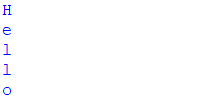

Python |
Содержание |
Уроки по изучению языка программирования Python |
||||||||||||||||||||||||||||
ЦиклыЦиклы позволяют выполнять некоторое действие в зависимости от соблюдения некоторого условия. В языке Python есть следующие типы циклов:
Цикл whileЦикл while проверяет истинность некоторого условия, и если условие истинно, то выполняет инструкции цикла. Он имеет следующее формальное определение:
После ключевого слова while указывается условное выражение, и пока это выражение возвращает значение True, будет выполняться блок инструкций, который идет далее. Все инструкции, которые относятся к циклу while, располагаются на последующих строках и должны иметь отступ от начала ключевого слова while.
В данном случае цикл while будет выполняться, пока переменная number меньше 5. Сам блок цикла состоит из двух инструкций:
Обратите внимание, что они имеют отступы от начала оператора while - в данном случае от начала строки. Благодаря этому Python может определить, что они принадлежат циклу. В самом цикле сначала выводится значение переменной number, а потом ей присваивается новое значение. Также обратите внимание, что последняя инструкция print("Работа программы завершена") не имеет отступов от начала строки, поэтому она не входит в цикл while. Весь процесс цикла можно представить следующим образом:
В итоге при выполнении кода мы получим следующий консольный вывод: Для цикла while также можно определить дополнительный блок else, инструкции которого выполняются, когда условие равно False:
То есть в данном случае сначала проверяется условие и выполняются инструкции while. Затем, когда условие становится равным False, выполняются инструкции из блока else. Обратите внимание, что инструкции из блока else также имеют отступы от начала конструкции цикла. В итоге в данном случае мы получим следующий консольный вывод: Блок else может быть полезен, если условие изначально равно False, и мы можем выполнить некоторые действия по этому поводу:
В данном случае условие number < 5 изначально равно False, поэтому цикл не выполняет ни одной итерации и сразу переходит в блоку else. Цикл forДругой тип циклов представляет конструкция for. Этот цикл пробегается по набору значений, помещает каждое значение в переменную, и затем в цикле мы можем с этой переменной производить различные действия. Формальное определение цикла for:Другой тип циклов представляет конструкция for. Этот цикл пробегается по набору значений, помещает каждое значение в переменную, и затем в цикле мы можем с этой переменной производить различные действия. Формальное определение цикла for:
После ключевого слова for идет название переменной, в которую будут помещаться значения. Затем после оператора in указывается набор значений и двоеточие. А со следующей строки располагается блок инструкций цикла, которые также должны иметь отступы от начала цикла. При выполнении цикла Python последовательно получает все значения из набора и передает их переменную. Когда все значения из набора будут перебраны, цикл завершает свою работу. В качестве набора значений, например, можно рассматривать строку, которая по сути представляет набор символов. Посмотрим на примере:
В цикле определяется переменную c, после оператора in в качестве перебираемого набора указана переменная message, которая хранит строку "Hello". В итоге цикл for будет перебираеть последовательно все символы из строки message и помещать их в переменную c. Блок самого цикла состоит из одной инструкции, которая выводит значение переменной с на консоль. Консольный вывод программы: Цикл for также может иметь дополнительный блок else, который выполняется после завершения цикла:
В данном случае мы получим следующий консольный вывод: Стоит отметить, что блок else имеет доступ ко всем переменным, которые определены в цикле for. Вложенные циклыОдни циклы внутри себя могут содержать другие циклы. Рассмотрим на примере вывода таблицы умножения:
Внешний цикл while i < 10: срабатывает 9 раз пока переменная i не станет равна 10. Внутри этого цикла срабатывает внутренний цикл while j < 10:. Внутренний цикл также срабатывает 9 раз пока переменная j не станет равна 10. Причем все 9 итераций внутреннего цикла срабатывают в рамках одной итерации внешнего цикла.
В каждой итерации внутреннего цикла на консоль будет выводится произведение чисел i и j. Затем значение переменной j увеличивается на единицу. Когда внутренний цикл закончил работу, значений переменной j сбрасывается в 1, а значение переменной i увеличивается на единицу и происходит переход к следующей итерации внешнего цикла. И все повторяется, пока переменная i не станет равна 10. Соответственно внутренний цикл сработает всего 81 раз для всех итераций внешнего цикла. В итоге мы получим следующий консольный вывод: Подобным образом можно определять вложенные циклы for:
В данном случае внешний цикл проходит по строке "ab" и каждый символ помещает в переменную c1. Внутренний цикл проходит по строке "ba", помещает каждый символ строки в переменную c2 и выводит сочетание обоих символов на консоль. То есть в итоге мы получим все возможные сочетания символов a и b: Выход из цикла. break и continueДля управления циклом мы можем использовать специальные операторы break и continue. Оператор break осуществляет выход из цикла. А оператор continue выполняет переход к следующей итерации цикла. Оператор break может использоваться, если в цикле образуются условия, которые несовместимы с его дальнейшим выполнением. Рассмотрим следующий пример:
Здесь цикл while проверяет условие number < 5. И пока number не равно 5, предполагается, что значение number будет выводиться на консоль. Однако внутри цикла также проверяется другое условие: if number == 3. То есть, если значение number равно 3, то с помощью оператора break выходим из цикла. И в итоге мы получим следующий консольный вывод: В отличие от оператора break оператор continue выполняет переход к следующей итерации цикла без его завершения. Например, в предыдущем примере заменим break на continue:
И в этом случае если значение переменной number равно 3, последующие инструкции после оператора continue не будут выполняться:
|